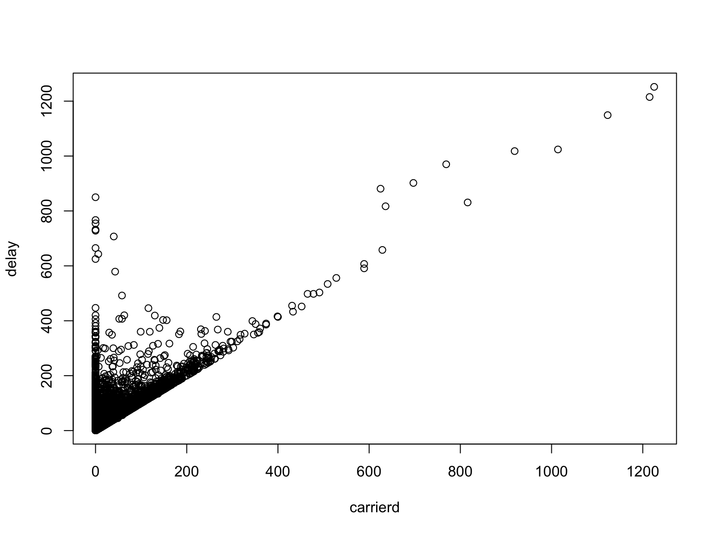
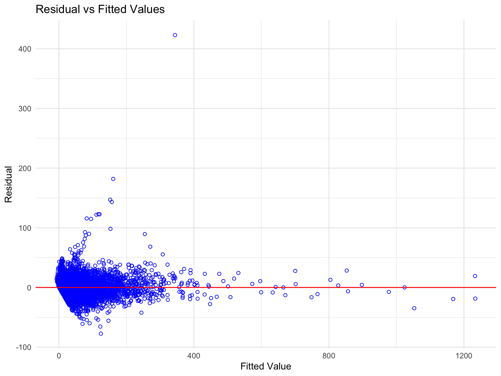

Regression_delay
Step 1: Data Wrangling
Data import
delay = read.csv("./tidied_data/delay.csv") %>%
janitor::clean_names() %>% filter(delay_minutes > 0)
h_weather = read.csv("./tidied_data/hourly_weather.csv") %>%
janitor::clean_names() Clean dataset ‘delay’
Check how many airlines
unique(delay$airline_name)## [1] "Endeavor Air" "American Airlines" "Alaska Airlines"
## [4] "JetBlue Airways" "Delta Air Lines" "Republic Airways"
## [7] "United Air Lines"7 -> ok, keep
Check how many destinations
unique(delay$destination_airport)## [1] "RDU" "DTW" "MSP" "SAV" "LAX" "MIA" "ORD" "DCA" "PHX" "FLL" "DFW" "SFO"
## [13] "AUS" "SEA" "SAN" "PDX" "ABQ" "TPA" "SRQ" "ROC" "MCO" "SJU" "ONT" "PBI"
## [25] "RSW" "ORH" "BUF" "LAS" "BOS" "BQN" "ATL" "CHS" "JAX" "BTV" "PSP" "IAH"
## [37] "SLC" "CLT" "STT" "DEN" "BUR" "MSY" "BNA" "SYR" "BWI" "IND" "ORF" "PIT"
## [49] "RIC" "PHL" "SJC" "SAT" "CLE" "IAD" "BGR" "SMF" "PWM" "CVG" "EYW" "CMH"
## [61] "SNA" "RNO" "EGE" "JAC" "PSE" "BZN"66 -> too many, remove
Keep variables of interest and date for merge purpose
(which will be removed later)
delay = delay %>%
mutate(
airline = airline_name,
hour = scheduled_hour,
delay = delay_minutes,
carrierd = delay_carrier_minutes,
extrmwd = delay_weather_minutes,
nasd = delay_national_aviation_system_minutes,
securityd = delay_security_minutes,
latarrd = delay_late_aircraft_arrival_minutes) %>%
mutate(hour = as.numeric(hour)) %>%
mutate(month = month.abb[month]) %>%
select(airline, date, month, hour, delay, carrierd, extrmwd, nasd, securityd, latarrd)check ‘NA’
sum(is.na(delay))0 -> good
Clean dataset ‘h_weather’
About the measure of temperature: Since the dry bulb temperature is
the ambient air temperature measured by regular thermometers, that is,
the temperature often mentioned in our general weather forecast. Thus,
we decide to use the variable hourly_dry_bulb_temperature
to represent temperature.
h_weather = h_weather %>%
mutate(
temperature = hourly_dry_bulb_temperature,
humidity = hourly_relative_humidity,
visibility = hourly_visibility,
wind_s = hourly_wind_speed,
hour = as.numeric(hour)) %>%
mutate(month = month.abb[month]) %>%
select(date, month, hour, temperature, humidity, visibility, wind_s)check ‘NA’
sum(is.na(h_weather))0 -> good
Merge datasets ‘delay’ and ‘hourly_weather’
raw_df = merge(x = delay, y = h_weather, by = c("date", "month", "hour"),
all.x = TRUE)check ‘NA’
sum(is.na(raw_df))0 -> good
To this step, we have our raw dataset for doing association analysis.
Since the outcome variable delay is a continuous variable,
we would do linear regression. However, there might be too many
variables so far (ignoring date we still got 12 potential
predictors), so next step will be fitting the model.
By intuition, I would set:
airline -> categorical month ->
categorical hour -> categorical (need further
categorization) and for the rest -> continuous
Inspections into the dataset
Let’s first check how each variable is roughly distributed.
Dependent variable / outcome (continuous)
See if our dependent variable delay follows a normal
distribution.
hist(raw_df$delay)
No, our dependent variable delay is not normally
distributed.
-> It is okay because for linear regression, dependent variable does not have to be normally distributed. On the other hand, the model’s residuals, do have to be normally distributed.
Independent variables / predictors (categorical)
cat_sum = raw_df %>%
select(airline, month, hour) %>%
mutate(
airline = as.factor(airline),
month = as.factor(month),
hour = as.factor(hour)
) %>%
summary(maxsum = 24)
cat_sum## airline month hour
## Alaska Airlines : 227 Dec:3730 5 : 51
## American Airlines:1361 Jan:3861 6 :312
## Delta Air Lines :2058 Nov:3156 7 :496
## Endeavor Air : 568 8 :896
## JetBlue Airways :5489 9 :656
## Republic Airways : 961 10:346
## United Air Lines : 83 11:436
## 12:361
## 13:642
## 14:577
## 15:858
## 16:611
## 17:724
## 18:824
## 19:965
## 20:942
## 21:650
## 22:349
## 23: 51Independent variables / predictors (continuous)
con_sum_df = raw_df %>%
select(-date, -airline, -month, -hour)
con_sum = skim(con_sum_df) %>%
dplyr::select(-n_missing, -complete_rate) %>%
mutate(
mean = numeric.mean,
sd = numeric.sd,
histogram = numeric.hist,
var = skim_variable,
min = numeric.p0,
max = numeric.p100,
median = numeric.p50,
q1 = numeric.p25,
q3 = numeric.p75
) %>%
dplyr::select(-numeric.mean, -numeric.sd, -numeric.hist, -skim_variable, -numeric.p0, -numeric.p100, -numeric.p50, -numeric.p25, -numeric.p75) %>%
relocate(var, mean, min, q1, median, q3, max, sd, histogram)
con_sum## # A tibble: 10 × 10
## var mean min q1 median q3 max sd histogram skim_type
## <chr> <dbl> <dbl> <dbl> <dbl> <dbl> <dbl> <dbl> <chr> <chr>
## 1 delay 40.8 1 7 18 48 1252 66.8 ▇▁▁▁▁ numeric
## 2 carrierd 20.2 0 0 0 21 1225 51.2 ▇▁▁▁▁ numeric
## 3 extrmwd 1.70 0 0 0 0 850 20.2 ▇▁▁▁▁ numeric
## 4 nasd 4.72 0 0 0 0 731 16.4 ▇▁▁▁▁ numeric
## 5 securityd 0.124 0 0 0 0 137 2.46 ▇▁▁▁▁ numeric
## 6 latarrd 8.50 0 0 0 0 714 30.8 ▇▁▁▁▁ numeric
## 7 temperature 40.5 10 34 41 48 68 10.7 ▁▃▇▆▁ numeric
## 8 humidity 61.1 16 47 57 76 100 18.9 ▁▇▇▅▅ numeric
## 9 visibility 9.27 0 10 10 10 10 2.18 ▁▁▁▁▇ numeric
## 10 wind_s 12.0 0 7 11 16 32 6.50 ▅▇▇▃▁ numericNext, as mentioned above, we want to further categorize variable
hour.
Motivation:
To increase the power of our model by reducing the number of parameters involved and to be more efficient and concise.
Rationale for the categorization of hour:
Based on the previous inspection of variable hour, we
could see that: except for 5, 8, 10, 22, and 23, the frequencies of the
other classes are roughly even (between 1000-2000). Take this into
consideration, our rationale for classification will be a combination of
convention and the desire to achieve a uniform distribution.
Thus, we would categorize hour into the following 4
categories:
morning: 5-8
noon: 9-13
afternoon: 14-17
night:18-23
Now, we can start categorize hour
raw_df = raw_df %>%
mutate(hour_c = cut(hour, breaks = c(4, 8, 13, 17, 24),
labels = c("morning","noon","afternoon","night"))) %>%
select(-hour)As usual, check if it was done properly
summary(as.factor(raw_df$hour_c))## morning noon afternoon night
## 1755 2441 2770 3781sum(is.na(raw_df))## [1] 00 ‘NA’ and the distribution looks good.
Now, since we are not yet able to decide the variable type of the rest of the predictors, we need further analysis.
Step 2: Check Assumptions for Regression
Assumption 1: Linearity
Do simple linear regression for each independent variable, along with scatterplots to assess the linearity
Continuous vars
- temperature
lrTemp = lm(delay~temperature, data = raw_df)
summary(lrTemp) %>% broom::glance()## # A tibble: 1 × 8
## r.squared adj.r.squared sigma statistic p.value df df.residual nobs
## <dbl> <dbl> <dbl> <dbl> <dbl> <dbl> <int> <dbl>
## 1 0.0112 0.0111 66.5 121. 4.35e-28 1 10745 10747summary(lrTemp) %>%
broom::tidy() %>%
select(term, estimate, p.value)## # A tibble: 2 × 3
## term estimate p.value
## <chr> <dbl> <dbl>
## 1 (Intercept) 67.6 4.74e-154
## 2 temperature -0.662 4.35e- 28plot(delay~temperature, data = raw_df)
- humidity
lrHum = lm(delay~humidity, data = raw_df)
summary(lrHum) %>% broom::glance()## # A tibble: 1 × 8
## r.squared adj.r.squared sigma statistic p.value df df.residual nobs
## <dbl> <dbl> <dbl> <dbl> <dbl> <dbl> <int> <dbl>
## 1 0.00163 0.00154 66.8 17.5 0.0000283 1 10745 10747summary(lrHum) %>%
broom::tidy() %>%
select(term, estimate, p.value)## # A tibble: 2 × 3
## term estimate p.value
## <chr> <dbl> <dbl>
## 1 (Intercept) 32.1 1.44e-48
## 2 humidity 0.143 2.83e- 5plot(delay~humidity, data = raw_df)
- visibility
lrVis = lm(delay~visibility, data = raw_df)
summary(lrVis) %>% broom::glance()## # A tibble: 1 × 8
## r.squared adj.r.squared sigma statistic p.value df df.residual nobs
## <dbl> <dbl> <dbl> <dbl> <dbl> <dbl> <int> <dbl>
## 1 0.00739 0.00729 66.6 80.0 4.45e-19 1 10745 10747summary(lrVis) %>%
broom::tidy() %>%
select(term, estimate, p.value)## # A tibble: 2 × 3
## term estimate p.value
## <chr> <dbl> <dbl>
## 1 (Intercept) 65.3 1.75e-116
## 2 visibility -2.64 4.45e- 19plot(delay~visibility, data = raw_df)
- wind speed
lrWin = lm(delay~wind_s, data = raw_df)
summary(lrWin) %>% broom::glance()## # A tibble: 1 × 8
## r.squared adj.r.squared sigma statistic p.value df df.residual nobs
## <dbl> <dbl> <dbl> <dbl> <dbl> <dbl> <int> <dbl>
## 1 0.000961 0.000868 66.8 10.3 0.00131 1 10745 10747summary(lrWin) %>%
broom::tidy() %>%
select(term, estimate, p.value)## # A tibble: 2 × 3
## term estimate p.value
## <chr> <dbl> <dbl>
## 1 (Intercept) 37.0 1.95e-159
## 2 wind_s 0.319 1.31e- 3plot(delay~wind_s, data = raw_df)
- carrier delay
lrCar = lm(delay~carrierd, data = raw_df)
summary(lrCar) %>% broom::glance()## # A tibble: 1 × 8
## r.squared adj.r.squared sigma statistic p.value df df.residual nobs
## <dbl> <dbl> <dbl> <dbl> <dbl> <dbl> <int> <dbl>
## 1 0.633 0.633 40.5 18524. 0 1 10745 10747summary(lrCar) %>%
broom::tidy() %>%
select(term, estimate, p.value)## # A tibble: 2 × 3
## term estimate p.value
## <chr> <dbl> <dbl>
## 1 (Intercept) 19.8 0
## 2 carrierd 1.04 0plot(delay~carrierd, data = raw_df)
- extreme weather delay
lrExw = lm(delay~extrmwd, data = raw_df)
summary(lrExw) %>% broom::glance()## # A tibble: 1 × 8
## r.squared adj.r.squared sigma statistic p.value df df.residual nobs
## <dbl> <dbl> <dbl> <dbl> <dbl> <dbl> <int> <dbl>
## 1 0.0829 0.0828 64.0 971. 3.43e-204 1 10745 10747summary(lrExw) %>%
broom::tidy() %>%
select(term, estimate, p.value)## # A tibble: 2 × 3
## term estimate p.value
## <chr> <dbl> <dbl>
## 1 (Intercept) 39.2 0
## 2 extrmwd 0.951 3.43e-204plot(delay~extrmwd, data = raw_df)
- NAS delay
lrNas = lm(delay~nasd, data = raw_df)
summary(lrNas) %>% broom::glance()## # A tibble: 1 × 8
## r.squared adj.r.squared sigma statistic p.value df df.residual nobs
## <dbl> <dbl> <dbl> <dbl> <dbl> <dbl> <int> <dbl>
## 1 0.0196 0.0195 66.2 215. 3.15e-48 1 10745 10747summary(lrNas) %>%
broom::tidy() %>%
select(term, estimate, p.value)## # A tibble: 2 × 3
## term estimate p.value
## <chr> <dbl> <dbl>
## 1 (Intercept) 38.1 0
## 2 nasd 0.572 3.15e-48plot(delay~nasd, data = raw_df)
- security delay
lrSec = lm(delay~securityd, data = raw_df)
summary(lrSec) %>% broom::glance()## # A tibble: 1 × 8
## r.squared adj.r.squared sigma statistic p.value df df.residual nobs
## <dbl> <dbl> <dbl> <dbl> <dbl> <dbl> <int> <dbl>
## 1 0.000878 0.000785 66.8 9.44 0.00213 1 10745 10747summary(lrSec) %>%
broom::tidy() %>%
select(term, estimate, p.value) ## # A tibble: 2 × 3
## term estimate p.value
## <chr> <dbl> <dbl>
## 1 (Intercept) 40.7 0
## 2 securityd 0.805 0.00213plot(delay~securityd, data = raw_df)- late arrival delay
lrLat = lm(delay~latarrd, data = raw_df)
summary(lrLat) %>% broom::glance()## # A tibble: 1 × 8
## r.squared adj.r.squared sigma statistic p.value df df.residual nobs
## <dbl> <dbl> <dbl> <dbl> <dbl> <dbl> <int> <dbl>
## 1 0.281 0.281 56.7 4193. 0 1 10745 10747summary(lrLat) %>%
broom::tidy() %>%
select(term, estimate, p.value)## # A tibble: 2 × 3
## term estimate p.value
## <chr> <dbl> <dbl>
## 1 (Intercept) 31.0 0
## 2 latarrd 1.15 0plot(delay~latarrd, data = raw_df)Categorical vars
First, tell R that they are categorical variables
raw_df =
raw_df %>%
mutate(
month = fct_infreq(as.factor(month)),
hour_c = fct_infreq(hour_c),
airline = fct_infreq(airline)
)- month
lrMon = lm(delay~month, data = raw_df)
summary(lrMon) %>% broom::glance()## # A tibble: 1 × 8
## r.squared adj.r.squared sigma statistic p.value df df.residual nobs
## <dbl> <dbl> <dbl> <dbl> <dbl> <dbl> <int> <dbl>
## 1 0.0196 0.0195 66.2 108. 5.32e-47 2 10744 10747summary(lrMon) %>%
broom::tidy() %>%
select(term, estimate, p.value)## # A tibble: 3 × 3
## term estimate p.value
## <chr> <dbl> <dbl>
## 1 (Intercept) 53.0 0
## 2 monthDec -16.4 4.89e-27
## 3 monthNov -22.0 3.33e-43- hour
lrHour = lm(delay~hour_c, data = raw_df)
summary(lrHour) %>% broom::glance()## # A tibble: 1 × 8
## r.squared adj.r.squared sigma statistic p.value df df.residual nobs
## <dbl> <dbl> <dbl> <dbl> <dbl> <dbl> <int> <dbl>
## 1 0.00189 0.00161 66.8 6.78 0.000146 3 10743 10747summary(lrHour) %>%
broom::tidy() %>%
select(term, estimate, p.value)## # A tibble: 4 × 3
## term estimate p.value
## <chr> <dbl> <dbl>
## 1 (Intercept) 44.1 0
## 2 hour_cafternoon -3.98 0.0173
## 3 hour_cnoon -4.00 0.0212
## 4 hour_cmorning -8.48 0.0000112- airline
lrAL = lm(delay~airline, data = raw_df)
summary(lrAL) %>% broom::glance()## # A tibble: 1 × 8
## r.squared adj.r.squared sigma statistic p.value df df.residual nobs
## <dbl> <dbl> <dbl> <dbl> <dbl> <dbl> <int> <dbl>
## 1 0.0107 0.0102 66.5 19.4 1.32e-22 6 10740 10747summary(lrAL) %>%
broom::tidy() %>%
select(term, estimate, p.value)## # A tibble: 7 × 3
## term estimate p.value
## <chr> <dbl> <dbl>
## 1 (Intercept) 46.9 0
## 2 airlineDelta Air Lines -16.3 3.30e-21
## 3 airlineAmerican Airlines -10.5 1.74e- 7
## 4 airlineRepublic Airways -10.1 1.35e- 5
## 5 airlineEndeavor Air -10.6 3.04e- 4
## 6 airlineAlaska Airlines -13.3 3.07e- 3
## 7 airlineUnited Air Lines 13.2 7.22e- 2The above results were not very straightforward, but give us a sense
that we could include carrierd and latarrd in
to the final model, according to the R-squared values.
Assumption 2: Independence of observations
Use correlation to assess the relationship between all independent variables and make sure they aren’t too highly correlated.
First, it’s time to remove variable date as it is not
one of the predictors
raw_df = raw_df %>%
select(-date)Correlation matrix
NOTE: This approach is not meaningful for our nominal
predictors month, airline, or
hour_c. you can ignore them.
cor = raw_df %>%
select(-delay) %>%
mutate(
airline = as.numeric(airline),
month = as.numeric(month),
hour_c = as.numeric(hour_c)
) %>%
cor(method = c("pearson", "kendall", "spearman"))
round(cor, 2)## month airline carrierd extrmwd nasd securityd latarrd temperature
## month 1.00 0.02 -0.08 -0.07 -0.04 0.01 -0.09 0.61
## airline 0.02 1.00 -0.09 0.03 0.07 -0.02 0.03 0.04
## carrierd -0.08 -0.09 1.00 -0.03 0.01 -0.01 0.08 -0.06
## extrmwd -0.07 0.03 -0.03 1.00 0.07 0.00 0.02 -0.06
## nasd -0.04 0.07 0.01 0.07 1.00 0.00 0.01 0.01
## securityd 0.01 -0.02 -0.01 0.00 0.00 1.00 0.00 0.01
## latarrd -0.09 0.03 0.08 0.02 0.01 0.00 1.00 -0.07
## temperature 0.61 0.04 -0.06 -0.06 0.01 0.01 -0.07 1.00
## humidity -0.03 0.04 0.04 0.03 0.14 0.01 0.02 0.27
## visibility 0.14 -0.02 -0.07 -0.08 -0.16 0.00 -0.05 -0.14
## wind_s -0.06 0.01 0.00 0.02 0.02 -0.01 0.06 -0.04
## hour_c -0.01 0.06 0.00 -0.01 0.03 -0.01 -0.06 -0.03
## humidity visibility wind_s hour_c
## month -0.03 0.14 -0.06 -0.01
## airline 0.04 -0.02 0.01 0.06
## carrierd 0.04 -0.07 0.00 0.00
## extrmwd 0.03 -0.08 0.02 -0.01
## nasd 0.14 -0.16 0.02 0.03
## securityd 0.01 0.00 -0.01 -0.01
## latarrd 0.02 -0.05 0.06 -0.06
## temperature 0.27 -0.14 -0.04 -0.03
## humidity 1.00 -0.57 -0.15 0.02
## visibility -0.57 1.00 0.10 -0.07
## wind_s -0.15 0.10 1.00 0.02
## hour_c 0.02 -0.07 0.02 1.00color = colorRampPalette(c("Blue", "white", "Red"))(20)
heatmap(x = cor, col = color, symm = TRUE)
Looks good, pretty independent.
*Could considering removing 1 of (visibility and
humidity) as they have a moderate correlation coefficient
(-0.54)
Assumption 3: Normality
Check this after we make the model.
Assumption 4: Homoscedasticity
Check this after we make the model.
Step 3: Building linear regression model
Perform linear regression with all predictors
lm_all = lm(delay ~ ., data = raw_df)
summary(lm_all)##
## Call:
## lm(formula = delay ~ ., data = raw_df)
##
## Residuals:
## Min 1Q Median 3Q Max
## -78.48 -7.66 -1.55 6.63 421.82
##
## Coefficients:
## Estimate Std. Error t value Pr(>|t|)
## (Intercept) 7.362272 1.273973 5.779 7.72e-09 ***
## monthDec -2.319200 0.396448 -5.850 5.06e-09 ***
## monthNov -2.071826 0.455361 -4.550 5.43e-06 ***
## airlineDelta Air Lines 0.455295 0.362431 1.256 0.20906
## airlineAmerican Airlines 0.080387 0.423943 0.190 0.84961
## airlineRepublic Airways -6.008516 0.490342 -12.254 < 2e-16 ***
## airlineEndeavor Air -2.708775 0.615832 -4.399 1.10e-05 ***
## airlineAlaska Airlines -3.658351 0.939559 -3.894 9.93e-05 ***
## airlineUnited Air Lines 3.412906 1.533660 2.225 0.02608 *
## carrierd 0.999808 0.002643 378.315 < 2e-16 ***
## extrmwd 0.983812 0.006653 147.878 < 2e-16 ***
## nasd 0.451126 0.008329 54.162 < 2e-16 ***
## securityd 0.951665 0.054210 17.555 < 2e-16 ***
## latarrd 1.007422 0.004408 228.533 < 2e-16 ***
## temperature 0.029591 0.018509 1.599 0.10992
## humidity -0.048752 0.009360 -5.209 1.94e-07 ***
## visibility 0.674235 0.077329 8.719 < 2e-16 ***
## wind_s -0.061330 0.021109 -2.905 0.00368 **
## hour_cafternoon -1.043555 0.355508 -2.935 0.00334 **
## hour_cnoon -1.508072 0.372626 -4.047 5.22e-05 ***
## hour_cmorning -1.943501 0.409750 -4.743 2.13e-06 ***
## ---
## Signif. codes: 0 '***' 0.001 '**' 0.01 '*' 0.05 '.' 0.1 ' ' 1
##
## Residual standard error: 13.82 on 10726 degrees of freedom
## Multiple R-squared: 0.9573, Adjusted R-squared: 0.9573
## F-statistic: 1.204e+04 on 20 and 10726 DF, p-value: < 2.2e-16Note:
R-squared = 0.9467 -> good
F-statistic: F-value = 2.639e+04 -> large, variance between
>> variance within, good
p-value < 2.2e-16 -> small, significant, good
The F-test of overall significance indicates whether this current linear regression model provides a better fit to the data than a model that contains no independent variables.
humidity -> p-value = 0.497590 (not significant)
under this model -> given what’s mentioned above, remove
wind_s -> p-value = 0.618192 (not significant) under
this model -> remove
Fit lm without wind_s or humidity
raw_df_10 = raw_df %>%
select(-humidity, -wind_s)
lm_10 = lm(delay ~ ., data = raw_df_10)
summary(lm_10)##
## Call:
## lm(formula = delay ~ ., data = raw_df_10)
##
## Residuals:
## Min 1Q Median 3Q Max
## -77.42 -7.63 -1.58 6.61 422.98
##
## Coefficients:
## Estimate Std. Error t value Pr(>|t|)
## (Intercept) 2.892919 0.989343 2.924 0.003462 **
## monthDec -1.972147 0.390423 -5.051 4.46e-07 ***
## monthNov -1.605897 0.448512 -3.580 0.000344 ***
## airlineDelta Air Lines 0.470515 0.362932 1.296 0.194855
## airlineAmerican Airlines 0.049241 0.424303 0.116 0.907615
## airlineRepublic Airways -6.073889 0.490836 -12.375 < 2e-16 ***
## airlineEndeavor Air -2.767276 0.616555 -4.488 7.25e-06 ***
## airlineAlaska Airlines -3.703884 0.940844 -3.937 8.31e-05 ***
## airlineUnited Air Lines 3.455044 1.535783 2.250 0.024488 *
## carrierd 0.999673 0.002646 377.757 < 2e-16 ***
## extrmwd 0.983465 0.006661 147.650 < 2e-16 ***
## nasd 0.447300 0.008314 53.804 < 2e-16 ***
## securityd 0.952767 0.054281 17.553 < 2e-16 ***
## latarrd 1.006363 0.004408 228.313 < 2e-16 ***
## temperature -0.002240 0.017625 -0.127 0.898892
## visibility 0.858347 0.066606 12.887 < 2e-16 ***
## hour_cafternoon -0.776806 0.351867 -2.208 0.027288 *
## hour_cnoon -1.133680 0.364407 -3.111 0.001869 **
## hour_cmorning -2.144557 0.408761 -5.246 1.58e-07 ***
## ---
## Signif. codes: 0 '***' 0.001 '**' 0.01 '*' 0.05 '.' 0.1 ' ' 1
##
## Residual standard error: 13.84 on 10728 degrees of freedom
## Multiple R-squared: 0.9572, Adjusted R-squared: 0.9571
## F-statistic: 1.334e+04 on 18 and 10728 DF, p-value: < 2.2e-16Note:
R-squared = 0.9467 -> same, good
F-statistic: F-value = 2.932e+04 -> close, large, variance between >> variance within, good p-value < 2.2e-16 -> same, small, significant, good
Fit the best subset linear model
The function regsubsets() will produce the best model with 1 predictor, the best model with 2 predictors, 3 predictors, … up to 14 predictors(nvmax=14 option).
library(leaps)
bestsub.lm <- regsubsets(delay ~ .,
data = raw_df_10, nvmax = 18)
sum.bestsub.lm = summary(bestsub.lm)We have 18 predictor parameters, and the sample size 29725 will be sufficient for it (“One in ten” rule)
Check some measures to select the best subset model
Note:
A small value of Cp means that the model is relatively precise.
A larger R-squared value means that the independent variables explain a larger percentage of the variation in the independent variable.
A lower BIC implies either fewer explanatory variables, better fit, or both.
cbind(
Cp = summary(bestsub.lm)$cp,
r2 = summary(bestsub.lm)$rsq,
BIC = summary(bestsub.lm)$bic
)## Cp r2 BIC
## [1,] 81314.30483 0.6328931 -10751.03
## [2,] 26384.86466 0.8519492 -20501.07
## [3,] 3407.14997 0.9435879 -30861.26
## [4,] 769.68666 0.9541135 -33071.38
## [5,] 457.37074 0.9553670 -33359.75
## [6,] 266.25418 0.9561371 -33537.52
## [7,] 109.50813 0.9567701 -33684.47
## [8,] 92.85219 0.9568445 -33693.70
## [9,] 75.06306 0.9569234 -33704.09
## [10,] 56.56372 0.9570052 -33715.22
## [11,] 40.36667 0.9570778 -33724.09
## [12,] 25.29379 0.9571458 -33731.87
## [13,] 20.35882 0.9571735 -33729.52
## [14,] 17.45621 0.9571930 -33725.15
## [15,] 14.72969 0.9572119 -33720.60
## [16,] 15.02914 0.9572187 -33713.02
## [17,] 17.01347 0.9572187 -33703.75
## [18,] 19.00000 0.9572188 -33694.49which.max(sum.bestsub.lm$rsq)## [1] 18sum.bestsub.lm$which[18,]## (Intercept) monthDec monthNov
## TRUE TRUE TRUE
## airlineDelta Air Lines airlineAmerican Airlines airlineRepublic Airways
## TRUE TRUE TRUE
## airlineEndeavor Air airlineAlaska Airlines airlineUnited Air Lines
## TRUE TRUE TRUE
## carrierd extrmwd nasd
## TRUE TRUE TRUE
## securityd latarrd temperature
## TRUE TRUE TRUE
## visibility hour_cafternoon hour_cnoon
## TRUE TRUE TRUE
## hour_cmorning
## TRUEAll true -> keep all
Fit the regression model
Best_lm = lm(delay ~ .,
data = raw_df_10)
summary(Best_lm) %>% broom::glance()## # A tibble: 1 × 8
## r.squared adj.r.squared sigma statistic p.value df df.residual nobs
## <dbl> <dbl> <dbl> <dbl> <dbl> <dbl> <int> <dbl>
## 1 0.957 0.957 13.8 13335. 0 18 10728 10747summary(Best_lm) %>%
broom::tidy() %>%
select(term, estimate, p.value)## # A tibble: 19 × 3
## term estimate p.value
## <chr> <dbl> <dbl>
## 1 (Intercept) 2.89 3.46e- 3
## 2 monthDec -1.97 4.46e- 7
## 3 monthNov -1.61 3.44e- 4
## 4 airlineDelta Air Lines 0.471 1.95e- 1
## 5 airlineAmerican Airlines 0.0492 9.08e- 1
## 6 airlineRepublic Airways -6.07 6.21e-35
## 7 airlineEndeavor Air -2.77 7.25e- 6
## 8 airlineAlaska Airlines -3.70 8.31e- 5
## 9 airlineUnited Air Lines 3.46 2.45e- 2
## 10 carrierd 1.00 0
## 11 extrmwd 0.983 0
## 12 nasd 0.447 0
## 13 securityd 0.953 5.05e-68
## 14 latarrd 1.01 0
## 15 temperature -0.00224 8.99e- 1
## 16 visibility 0.858 1.02e-37
## 17 hour_cafternoon -0.777 2.73e- 2
## 18 hour_cnoon -1.13 1.87e- 3
## 19 hour_cmorning -2.14 1.58e- 7Check for residual normality
library("olsrr")##
## Attaching package: 'olsrr'## The following object is masked from 'package:datasets':
##
## riversols_plot_resid_fit(Best_lm)
# residual vs fitted
plot(Best_lm, 1)
#qq plot
plot(Best_lm, 2)
Check for heteroscadacity
plot(Best_lm, 3)
Step 4: Fit stratum-specific models
Stratum of interest:
month
airline
hour_c
Fit month-specific model
we can nest within months and fit month-specific models associating delay with the rest of variables
nest_lm_m =
raw_df_10 %>%
select(-airline, -hour_c) %>%
nest(data = -month) %>%
mutate(
models = map(data, ~lm(delay ~ ., data = .x)),
results = map(models, broom::tidy)) %>%
select(-data, -models) %>%
unnest(results)
nest_lm_m %>%
select(month, term, estimate) %>%
mutate(term = fct_inorder(term)) %>%
pivot_wider(
names_from = term, values_from = estimate) %>%
knitr::kable(digits = 3)| month | (Intercept) | carrierd | extrmwd | nasd | securityd | latarrd | temperature | visibility |
|---|---|---|---|---|---|---|---|---|
| Nov | -11.232 | 1.002 | 0.754 | 0.520 | 0.940 | 0.994 | 0.036 | 1.770 |
| Dec | 1.884 | 0.989 | 0.994 | 0.531 | 0.987 | 0.993 | -0.010 | 0.628 |
| Jan | 3.907 | 1.007 | 0.991 | 0.282 | 0.971 | 1.008 | -0.050 | 0.808 |
Fit airline-specific model
we can nest within airlines and fit airline-specific models associating delay with the rest of variables
nest_lm_a =
raw_df_10 %>%
select(-month, -hour_c) %>%
nest(data = -airline) %>%
mutate(
models = map(data, ~lm(delay ~ ., data = .x)),
results = map(models, broom::tidy)) %>%
select(-data, -models) %>%
unnest(results)
nest_lm_a %>%
select(airline, term, estimate) %>%
mutate(term = fct_inorder(term)) %>%
pivot_wider(
names_from = term, values_from = estimate) %>%
knitr::kable(digits = 3)| airline | (Intercept) | carrierd | extrmwd | nasd | securityd | latarrd | temperature | visibility |
|---|---|---|---|---|---|---|---|---|
| JetBlue Airways | 6.039 | 0.993 | 1.004 | 0.374 | 0.937 | 1.021 | -0.073 | 0.656 |
| Delta Air Lines | 4.530 | 1.022 | 0.998 | 0.338 | 1.323 | 1.039 | -0.038 | 0.664 |
| Republic Airways | 7.032 | 0.992 | 0.988 | 0.000 | 0.995 | 0.983 | -0.048 | 0.143 |
| American Airlines | 8.372 | 1.004 | 0.875 | 0.227 | 0.557 | 1.009 | -0.105 | 0.578 |
| Endeavor Air | -32.538 | 0.970 | 0.961 | 0.855 | 1.043 | 0.965 | 0.131 | 3.398 |
| Alaska Airlines | 1.704 | 1.003 | 1.061 | 0.224 | NA | 0.980 | 0.024 | 0.419 |
| United Air Lines | -7.333 | 0.991 | 0.747 | 0.392 | NA | 1.066 | 0.197 | 1.199 |
Fit hour-specific model
we can nest within hour categories and fit hour-specific models associating delay with the rest of variables
nest_lm_h =
raw_df_10 %>%
select(-airline, -month) %>%
nest(data = -hour_c) %>%
mutate(
models = map(data, ~lm(delay ~ ., data = .x)),
results = map(models, broom::tidy)) %>%
select(-data, -models) %>%
unnest(results)
nest_lm_h %>%
select(hour_c, term, estimate) %>%
mutate(term = fct_inorder(term)) %>%
pivot_wider(
names_from = term, values_from = estimate) %>%
knitr::kable(digits = 3)| hour_c | (Intercept) | carrierd | extrmwd | nasd | securityd | latarrd | temperature | visibility |
|---|---|---|---|---|---|---|---|---|
| noon | -0.491 | 0.997 | 0.999 | 0.440 | 0.755 | 0.988 | -0.004 | 0.938 |
| afternoon | 2.139 | 0.990 | 0.954 | 0.655 | 0.965 | 0.993 | -0.112 | 1.037 |
| night | 11.990 | 1.009 | 1.012 | 0.103 | 0.988 | 1.030 | -0.127 | 0.331 |
| morning | 1.453 | 1.012 | 0.925 | 0.379 | 0.975 | 1.006 | -0.001 | 0.626 |
Step 5: Add interaction terms
Fit the regression model
int1_lm = lm(delay ~ . + carrierd*airline,
data = raw_df_10)
summary(int1_lm) %>% broom::glance()## # A tibble: 1 × 8
## r.squared adj.r.squared sigma statistic p.value df df.residual nobs
## <dbl> <dbl> <dbl> <dbl> <dbl> <dbl> <int> <dbl>
## 1 0.957 0.957 13.8 10016. 0 24 10722 10747summary(int1_lm) %>%
broom::tidy() %>%
select(term, estimate, p.value)## # A tibble: 25 × 3
## term estimate p.value
## <chr> <dbl> <dbl>
## 1 (Intercept) 3.11 1.79e- 3
## 2 monthDec -2.01 2.81e- 7
## 3 monthNov -1.69 1.73e- 4
## 4 airlineDelta Air Lines -0.0172 9.65e- 1
## 5 airlineAmerican Airlines -0.157 7.23e- 1
## 6 airlineRepublic Airways -6.12 2.33e-31
## 7 airlineEndeavor Air -2.45 2.24e- 4
## 8 airlineAlaska Airlines -3.85 1.14e- 4
## 9 airlineUnited Air Lines 3.63 2.06e- 2
## 10 carrierd 0.994 0
## # … with 15 more rows